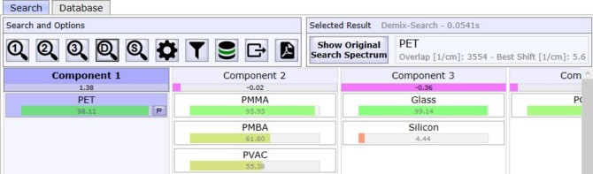
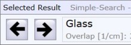
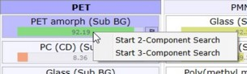

|
搜索概述
|

搜索和选项
简单搜索
这将启动简单数据库搜索：每个未知光谱与每个数据库光谱进行比较。仅使用在数据库选择中定义的主搜索集中的数据库和类别的光谱。
2组分搜索
这将启动两组分搜索：混合两个数据库光谱以拟合未知光谱。仅使用在数据库选择中定义的"组分2设置"中的数据库和类别的光谱。
3组分搜索
这将启动三组分搜索：混合三个数据库光谱以拟合未知光谱。仅使用在数据库选择中定义的"组分3设置"中的数据库和类别的光谱。
解混搜索
这将启动解混搜索：所有未知光谱被解混以拟合数据库光谱。
自搜索
启动自搜索：仅所有未知光谱相互比较。可用于查看未知光谱之间是否存在相似性。
搜索选项
参见 搜索选项
结果显示设置
参见 结果显示设置
数据库选择
参见 数据库选择
导出结果
参见 结果导出
报告
参见 生成PDF报告
---
选定结果
显示关于选定结果的信息，例如完整名称和重叠（未知搜索光谱与选定数据库光谱的重叠区域）
显示原始搜索光谱（在解混搜索结果上可见）
如果未选中：显示拟合/解混光谱如果选中：显示原始搜索光谱
箭头按钮（在简单搜索结果上可见，如果按材料排序）

跳转到上一个/下一个材料的结果列表。
结果列表
显示当前搜索结果。对于每个未知光谱，显示一个结果列表，最佳结果显示在顶部。您可以使用鼠标单击任何结果，或使用左右/上下箭头键浏览结果。您可以通过单击小旗帜或按空格键选择多个结果以进行导出或生成报告。
当以下设置之一导致结果隐藏时，显示此按钮：最低HQI、最低重叠、搜索/过滤名称、使用Delete键删除的结果。如果单击此按钮，所有结果将再次显示，删除的结果将被恢复。
如果搜索选项中的最低重叠导致较少结果时，显示此标签。
使用结果数据库光谱进行多组分搜索
在"选定结果"区域按下2/3放大图标，以启动2或3组分搜索，使用结果数据库光谱作为其中一个（或两个）组分。将打开新选项卡并显示结果。您也可以右键单击搜索结果以启动搜索。
